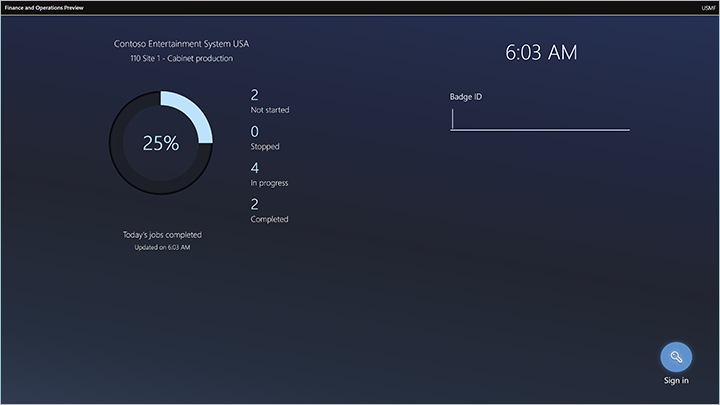
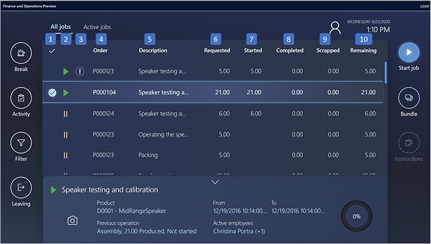
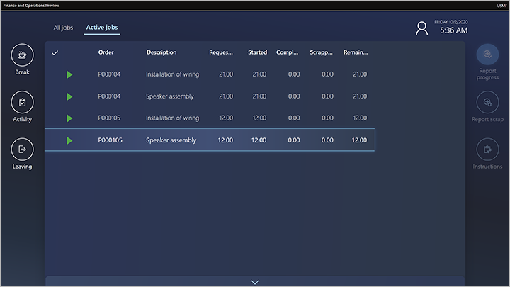
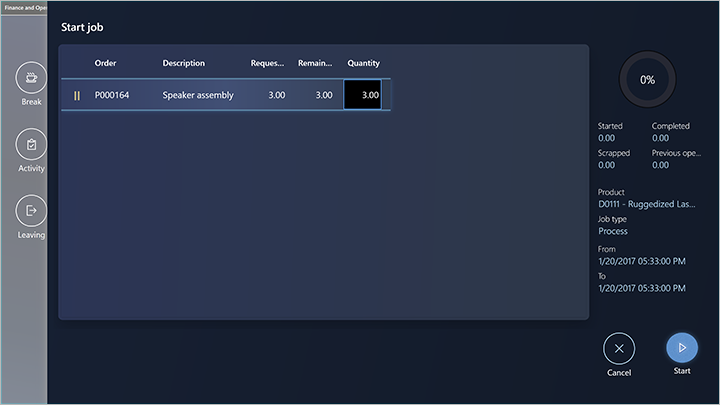
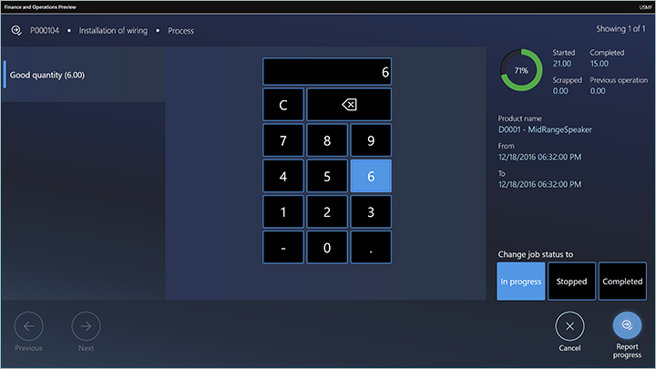
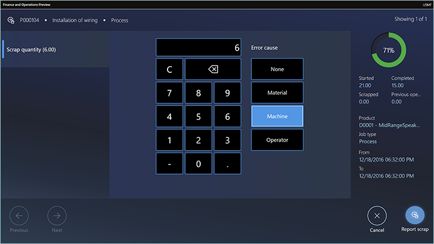

Verwendung der Produktionsausführungsoberfläche durch Arbeitskräfte
Important
Dynamics 365 for Finance and Operations hat sich zu speziell entwickelten Anwendungen entwickelt, mit denen Sie bestimmte Geschäftsfunktionen verwalten können. Weitere Informationen zu diesen Änderungen finden Sie im Dynamics 365-Lizenzierungshandbuch.
Important
Die hier aufgeführten Funktion sind alle oder teilweise im Rahmen einer Vorschauversion verfügbar. Inhalt und Funktionsweise unterliegen Änderungen. Weitere Informationen zu Vorschauversionen finden Sie in den FAQ zu Dienstupdates für One Version.
Die Produktionsausführungsoberfläche ist für die Touch-Interaktion optimiert. Das Design bietet einen visuellen Kontrast, der die Barrierefreiheitsanforderungen für Werkstattumgebungen erfüllt. Es bietet dieselben Funktionsfunktionen wie das Einzelvorgangskartengerät. Es ermöglicht jedoch auch das parallele Starten mehrerer Einzelvorgänge aus einer Einzelvorgangsliste. (Diese Funktion wird auch als Einzelvorgangsbündelung bezeichnet.) Darüber hinaus können Mitarbeiter aus einer Einzelvorgangsliste einen Leitfaden öffnen, der im Microsoft Dynamics 365 Handbuch erstellt wurde. Auf diese Weise können sie visuelle Anweisungen auf einem HoloLens erhalten.
Melden Sie sich bei der Produktionsausführungsoberfläche als Arbeitskraft an
Bevor Arbeitskräfte das Gerät verwenden können, muss es von einem Vorgesetzten oder technischen Personal vorbereitet und in Dynamics 365 Supply Chain Management die richtige Seite geöffnet werden. Weitere Informationen zum Einrichten eines Geräts finden Sie unter Konfigurieren Sie die Produktionsausführungsoberfläche.
Nachdem das Gerät vorbereitet wurde, wird die Anmeldeseite darauf angezeigt. Diese Seite enthält Informationen zum Status von Einzelvorgängen für die lokale Arbeitsgruppe. Diese Informationen werden regelmäßig aktualisiert. Auf der Seite verwenden Mitarbeiter ihre Batch-IDs zum Signieren. Obwohl Mitarbeiter kein Benutzerkonto für Supply Chain Management haben müssen, müssen sie ein Konto Zeit registrierte Arbeitskraft haben, das sie beim Anmelden verwenden können.

In den verbleibenden Abschnitten dieses Themas wird beschrieben, wie Arbeitskräfte mit der Schnittstelle interagieren.
Registerkarte alle Einzelvorgänge
Die Registerkarte Alle Einzelvorgänge enthält eine Einzelauftragsliste, in der alle Produktionsjobs mit dem Status angezeigt werden Nicht angefangen, Gestoppt, oder Gestartet.

Die Einzelvorgangsliste enthält die folgenden Spalten. (Die Nummern in der ersten Spalte entsprechen den Nummern in der vorherigen Abbildung.)
- Auswahlspalte – In der Spalte ganz links werden Häkchen verwendet, um Jobs anzuzeigen, die vom Mitarbeiter ausgewählt wurden. Arbeitskräfte können mehrere Einzelaufträge gleichzeitig in der Liste auswählen. Um alle Einzelaufträge in der Liste auszuwählen, aktivieren Sie das Häkchen in der Spaltenüberschrift. Wenn ein einzelner Einzelvorgang ausgewählt wird, werden Details zu diesem Einzelvorgang im unteren Teil der Seite angezeigt.
- Einzelvorgangsstatusspalte – In dieser Spalte werden Symbole verwendet, um den Status jedes Einzelvorganges anzuzeigen. Einzelvorgänge, die in dieser Spalte kein Symbol haben, haben den Status Nicht angefangen. Ein grünes Dreieck zeigt Einzelvorgänge mit dem Status Gestartet an. Zwei gelbe vertikale Linien kennzeichnen Einzelvorgänge mit dem Status Gestoppt.
- Spalte mit hoher Priorität – In dieser Spalte werden Ausrufezeichen verwendet, um Einzelvorgänge mit hoher Priorität anzuzeigen.
- Bestellung – In dieser Spalte wird die Produktionsauftragsnummer für einen Auftrag angezeigt.
- Beschreibung – Diese Spalte enthält eine Beschreibung des Vorgangs, zu der ein Job gehört.
- Angefordert – Diese Spalte zeigt die Menge, die ein Einzelauftrag produzieren soll.
- Gestartet – Diese Spalte zeigt die Menge, die bereits für einen Einzelvorgang gestartet wurde.
- Abgeschlossen – Diese Spalte zeigt die Menge, die bereits für einen Einzelvorgang abgeschlossen wurde.
- Verschrottet – Diese Spalte zeigt die Menge, die bereits für einen Einzelvorgang verschrottet wurde.
- Verbleibend – In dieser Spalte wird die Menge angezeigt, die für einen Einzelvorgang noch zu erledigen ist.
Registerkarte Aktive Einzelvorgänge

Die Einzelvorgangsliste auf der Registerkarte Aktive Jobs enthält die folgenden Spalten:
- Auswahlspalte – In der Spalte ganz links werden Häkchen verwendet, um Jobs anzuzeigen, die vom Mitarbeiter ausgewählt wurden. Arbeitskräfte können mehrere Einzelaufträge gleichzeitig in der Liste auswählen. Um alle Einzelaufträge in der Liste auszuwählen, aktivieren Sie das Häkchen in der Spaltenüberschrift. Wenn ein einzelner Einzelvorgang ausgewählt wird, werden Details zu diesem Einzelvorgang im unteren Teil der Seite angezeigt.
- Bestellung – In dieser Spalte wird die Produktionsauftragsnummer für einen Auftrag angezeigt.
- Beschreibung – Diese Spalte enthält eine Beschreibung des Vorgangs, zu der ein Job gehört.
- Angefordert – Diese Spalte zeigt die Menge, die ein Einzelauftrag produzieren soll.
- Gestartet – Diese Spalte zeigt die Menge, die bereits für einen Einzelvorgang gestartet wurde.
- Abgeschlossen – Diese Spalte zeigt die Menge, die bereits für einen Einzelvorgang abgeschlossen wurde.
- Verschrottet – Diese Spalte zeigt die Menge, die bereits für einen Einzelvorgang verschrottet wurde.
- Verbleibend – In dieser Spalte wird die Menge angezeigt, die für einen Einzelvorgang noch zu erledigen ist.
Einzelvorgänge starten und abschließen
Arbeiter starten einen Produktions-Einzelvorgang, indem sie einen Einzelvorgang auf der Registerkarte Alle Einzelvorgänge auswählen und dann Einzelvorgang starten wählen und das Dialogfeld Einzelvorgang starten öffnen.

Arbeitskräfte benutzen das Dialogfeld Einzelvorgang starten, um die Produktionsmenge zu bestätigen und dann den Einzelvorgang zu starten. Arbeitskräfte können die Menge anpassen, indem sie das Feld Menge auswählen und dann die numerische Tastatur verwenden, die angezeigt wird. Arbeitskräfte wählen Start, um mit dem Einzelvorgang zu beginnen. Das Dialogfeld Einzelvorgang starten wird geschlossen und der Einzelvorgang zur Registerkarte Aktive Einzelvorgänge hinzugefügt.
Arbeitskräfte können einen Einzelvorgang starten, der sich in einem beliebigen Status befindet. Wenn ein Mitarbeiter einen Einzelvorgang mit dem Status beginnt Nicht angefangen, zeigt das Feld Menge im Dialogfeld Einzelvorgang starten zunächst die volle Menge an. Wenn eine Arbeitskraft einen Einzelvorgang mit dem Status beginnt Gestartet oder Gestoppt zeigt das Feld Menge zunächst die verbleibende Menge an.
Gute Mengen melden
Wenn ein Mitarbeiter einen Einzelvorgang abschließt oder teilweise abschließt, kann er gute Mengen melden, die durch Auswahl eines Einzelauftrages auf der Registerkarte Aktive Einzelvorgänge ausgewählt werden und dann Fortschritt melden auswählen. Im Dialogfeld Fortschritt melden gibt die Arbeitskraft dann die gute Menge über die Zifferntastatur ein. Die Menge ist standardmäßig leer. Nachdem eine Menge eingegeben wurde, kann die Arbeitskraft den Status des Einzelvorgangs auf In Bearbeitung, Gestoppt, oder Abgeschlossen aktualisieren.

Schrott melden
Wenn ein Mitarbeiter einen Einzelvorgang abschließt oder teilweise abschließt, kann er Schrott melden, indem er den Einzelvorgang auf der Registerkarte Aktive Einzelvorgänge auswählt und dann Schrott melden auswählt. Im Dialogfeld Schrott melden gibt die Arbeitskraft dann die Schrottmengen über die Zifferntastatur ein. Die Arbeitskraft wählt auch einen Grund aus (Keiner, Maschine, Operator, oder Material).

Einen Einzelvorgang abschließen und einen neuen Einzelvorgang beginnen
Normalerweise schließen Arbeitskräfte einen Einzelvorgang ab, indem sie einen oder mehrere aktuelle Einzelvorgänge auf der Registerkarte Aktive Einzelvorgänge auswählen und dann Fortschritt melden wählen. Sie geben dann die produzierte Menge (die gute Menge) ein und setzen den Status auf Komplett. Wenn mehr als ein Einzelvorgang ausgewählt wurde, verwendet ein Mitarbeiter die Schaltflächen Zurück und Weiter, um zwischen ihnen zu navigieren. Um einen neuen Einzelvorgang zu starten, wählt die Arbeitskraft auf der Registerkarte Alle Einzelvorgänge und wählt dann Einzelvorgang starten.
Eine Arbeitskraft kann auch einen neuen Einzelvorgang beginnen, während sein vorheriger Einzelvorgang noch offen ist. Um einen neuen Einzelvorgang zu starten, wählt die Arbeitskraft auf der Registerkarte erneut Alle Einzelvorgänge und wählt dann Einzelvorgang starten. In diesem Fall informiert das Dialogfeld Einzelvorgang starten die Arbeitskraft darüber, dass sie gerade an einem Einzelvorgang arbeitet und dass sie diesen Einzelvorgang daher entweder beenden oder abschließen muss, bevor sie den neuen Einzelvorgang startet.
Paralleles Arbeiten an mehreren Einzelvorgängen
Eine Arbeitskraft kann gleichzeitig an mehreren Einzelvorgängen arbeiten (d.h. parallel). In diesem Fall wird die Sammlung von Einzelvorgängen, an denen denen die Arbeitskraft arbeitet, als ein Einzelvorgang-Bündel bezeichnet. Die Arbeitskraft kann dem Bündel neue Einzelvorgänge hinzufügen oder einen oder mehreren Einzelvorgang im Bündel abschließen. Die folgenden beiden Szenarien zeigen, wie eine Arbeitskraft parallel an Einzelvorgängen arbeiten kann.
Szenario 1: Eine Arbeitskraft, die keine aktiven Einzelvorgänge hat, möchte zwei Einzelvorgänge starten und parallel daran arbeiten
Die Arbeitskraft wählt auf der Registerkarte Alle Einzelvorgänge die zwei Einzelvorgänge und wählt dann Einzelvorgang starten. Das Dialogfeld Einzelvorgang starten zeigt beide ausgewählten Einzelvorgänge an, und die Arbeitskraft kann die Anzahl anpassen, die für jeden Einzelvorgang gestartet werden soll. Die Arbeitskraft bestätigt dann das Dialogfeld und kann beide Einzelvorgänge starten.
Szenario 2: Eine Arbeitskraft mit zwei aktiven Einzelvorgängen, die gerade ausgeführt werden, möchte einen dritten Einzelvorgang starten und parallel zu den beiden anderen daran arbeiten
Die Arbeitskraft wählt auf der Registerkarte Alle Einzelvorgänge den dritten Einzelvorgang aus und wählt dann Bündel. In dem Dialogfeld Bündel kann die Arbeitskraft die zu startende Menge anpassen. Die Arbeitskraft bestätigt dann das Dialogfeld durch Auswahl von Bündel.
Arbeiten an indirekten Aktivitäten
Indirekte Aktivitäten sind Aktivitäten, die nicht direkt mit einem Produktionsauftrag zusammenhängen. Indirekte Aktivitäten können flexibel definiert werden, wie beschrieben unter Richten Sie indirekte Aktivitäten für Zeit und Anwesenheit ein.
Zum Beispiel möchte Shannon, eine Werkstatt-Arbeitskraft bei Contoso, an einer Firmenbesprechung teilnehmen, und Besprechungen werden als indirekte Aktivität betrachtet. Es gilt eines der folgenden beiden Szenarien:
- Shannon arbeitet an einem oder mehreren aktiven Einzelvorgängen. Shannon wählt Aktivität aus, identifiziert die Aktivität (Besprechung) und bestätigt ihre Auswahl. Eine Meldung informiert sie darüber, dass sie gerade laufende Einzelvorgänge hat. In der Nachricht kann Shannon auswählen, ob die Einzelvorgänge, an denen sie arbeitet, abgeschlossen oder gestoppt werden sollen, bevor sie zur Besprechung geht.
- Shannon hat keine aktiven Einzelvorgänge. Shannon wählt Aktivität aus, identifiziert die Aktivität (Besprechung) und bestätigt ihre Auswahl. Sie ist jetzt als Teilnehmerin der Besprechung registriert.
In beiden Szenarien wechselt Shannon, nachdem sie ihre Auswahl bestätigt hat, entweder zur Anmeldeseite oder zu einer Seite, die darauf wartet, dass sie bestätigt, dass sie von ihrer indirekten Aktivität zurückgekehrt ist. Die angezeigte Seite hängt von der Konfiguration der Produktionsausführungsoberfläche ab. (Weitere Informationen finden Sie unter Einrichten der Produktionsausführungsoberfläche.)
An Pausen arbeiten
Arbeitskräfte können Pausen registrieren. Pausen können flexibel definiert werden, wie beschrieben in Lohn auf Basis von Erfassungen.
Eine Arbeitskraft erfasst eine Pause, indem er Pause auswählt und dann die Karte auswählt, die den Pausentyp darstellt (z. B. Mittagessen). Nachdem die Arbeitskraft die Auswahl bestätigt hat, zeigt das Gerät entweder die Anmeldeseite oder eine Seite an, die darauf wartet, dass die Arbeitskraft bestätigt, dass er von der Pause zurückgekehrt ist. Die angezeigte Seite hängt von der Konfiguration der Produktionsausführungsoberfläche ab. (Weitere Informationen finden Sie unter Einrichten der Produktionsausführungsoberfläche.)
Anweisungen zum Öffnen
Arbeitskräfte können ein Dokument öffnen, das an einen Einzelvorgang angehängt ist, indem sie Anleitung auswählen. Die Schaltfläche Anleitung ist nur verfügbar, wenn ein Dokument dem Einzelvorgang in den Stammdaten zugeordnet ist. Zum Beispiel ein Dokument, das an ein Produkt auf der Seite Freigegebene Produkte in Supply Chain Management angehängt ist, kann von Arbeitskräften in der Produktionsausführungsoberfläche geöffnet werden.
Öffnen von Mixed Reality-Anleitungen für HoloLens
Dynamics 365 Guides kann dazu beitragen, die Arbeitskräfte zu befähigen, indem praktisches Lernen unter Verwendung von Mixed Reality angeboten wird. Sie können standardisierte Prozesse mit schrittweisen Anweisungen definieren, die Ihre Arbeitskräfte zu den benötigten Werkzeugen und Teilen führen und den Arbeitskräften zeigen, wie sie diese Werkzeuge in realen Arbeitssituationen einsetzen können. Hier ein Überblick über den Prozess.
- Immer, wenn eine Arbeitskraft eine Einzelvorgangsliste auf der Produktionsausführungsoberfläche öffnet, zeigt die Schnittstelle alle relevanten Anleitungen für die angezeigten Einzelvorgänge an.
- Die Arbeitskraft wählt Anleitungen, um die Liste der Anleitungen anzuzeigen.
- Die Arbeitskraft wählt einen relevanten Leitfaden in der Liste aus.
- Die Produktionsausführungsoberfläche zeigt einen QR-Code für die ausgewählte Anleitung an.
- Die Arbeitskraft nimmt eine HoloLens und wirft einen Blick auf den QR-Code, um die Anleitung zu starten.
- Die Arbeitskraft arbeitet die Anleitung durch, um die Aufgabe zu lernen.
Weitere Informationen zum Erstellen, Zuweisen und Verwenden von Anleitungen für HoloLens, finden Sie unter Bereitstellung von Mixed Reality-Leitfäden für Arbeitskräfte in der Produktion.